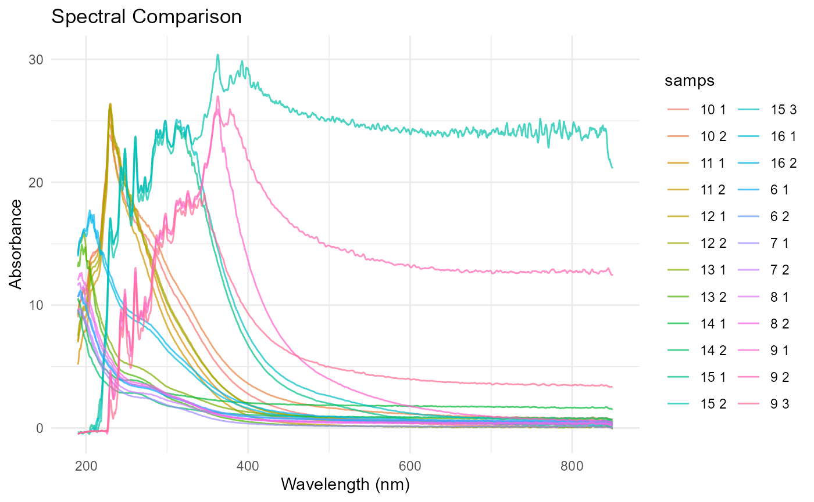
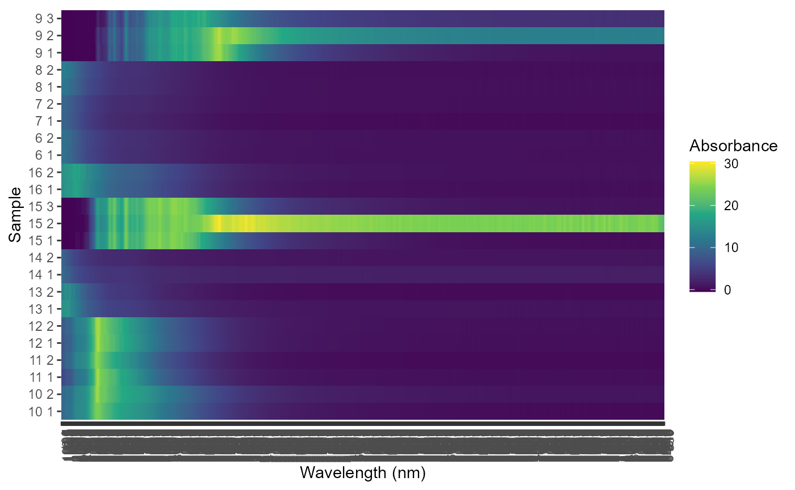

Advanced Spectral Analysis with nanodRop
Source:vignettes/advanced-analysis.Rmd
advanced-analysis.RmdIntroduction
This vignette covers advanced usage of the nanodRop
package, including custom wavelength analysis, statistical comparisons,
and integration with other R packages for spectral analysis.
Custom Wavelength Analysis
The parse_waves() function allows you to specify custom
wavelength pairs for analysis:
# Load sample data
data <- read_nanodrop(system.file("extdata", "UV-Vis 5_14_2024 5_03_11 PM.tsv", package = "nanodRop"))
# Analyze multiple wavelength pairs
custom_pairs <- list(
c(260, 280), # DNA/RNA peaks
c(300, 400), # General UV absorption
c(542, 644) # Custom peaks
)
results <- parse_waves(data, wave_pairs = custom_pairs)
head(results)
#> # A tibble: 6 × 10
#> samps abs_260 abs_280 diff_260_280 abs_300 abs_400 diff_300_400 abs_542
#> <chr> <dbl> <dbl> <dbl> <dbl> <dbl> <dbl> <dbl>
#> 1 6 1 3.39 3.13 0.261 2.58 0.93 1.65 0.652
#> 2 6 2 3.49 3.24 0.252 2.70 0.968 1.73 0.686
#> 3 7 1 2.54 2.37 0.178 1.87 0.352 1.51 0.16
#> 4 7 2 2.90 2.74 0.166 2.26 0.722 1.53 0.499
#> 5 8 1 3.53 3.29 0.240 2.68 0.756 1.93 0.517
#> 6 8 2 3.70 3.45 0.253 2.79 0.709 2.08 0.404
#> # ℹ 2 more variables: abs_644 <dbl>, diff_542_644 <dbl>Statistical Analysis
Perform statistical comparisons between samples:
# Calculate summary statistics for each sample
sample_stats <- data %>%
group_by(samps) %>%
summarise(
mean_abs = mean(abs),
max_abs = max(abs),
wavelength_max = waves[which.max(abs)],
auc = sum(abs) # Area under curve approximation
)
print(sample_stats)
#> # A tibble: 24 × 5
#> samps mean_abs max_abs wavelength_max auc
#> <chr> <dbl> <dbl> <dbl> <dbl>
#> 1 10 1 4.10 23.8 228. 5418.
#> 2 10 2 4.87 26.1 229 6433.
#> 3 11 1 3.56 26.3 230. 4709.
#> 4 11 2 3.17 24.8 228. 4184.
#> 5 12 1 3.84 26.4 230 5075.
#> 6 12 2 3.88 26.1 230. 5131.
#> 7 13 1 2.11 15.9 197 2781.
#> 8 13 2 1.38 14.9 194. 1823.
#> 9 14 1 2.36 10.5 190. 3122.
#> 10 14 2 1.42 9.61 190 1882.
#> # ℹ 14 more rowsVisualization Techniques
Create informative plots of spectral data:
# Spectral overlay plot
ggplot(data, aes(x = waves, y = abs, color = samps)) +
geom_line(alpha = 0.7) +
labs(x = "Wavelength (nm)", y = "Absorbance") +
theme_minimal() +
ggtitle("Spectral Comparison")

Visualization of spectral data
# Heatmap of absorbance across wavelengths
wide_data <- dcast(data, samps ~ waves, value.var = "abs")
melted_data <- melt(wide_data, id.vars = "samps")
ggplot(melted_data, aes(x = as.factor(variable), y = samps, fill = value)) +
geom_tile() +
scale_fill_viridis_c() +
labs(x = "Wavelength (nm)", y = "Sample", fill = "Absorbance") +
theme(axis.text.x = element_text(angle = 90, hjust = 1))

Visualization of spectral data
Quality Control
Check data quality and identify potential issues:
# Check for negative absorbance values
negative_abs <- data[data$abs < 0, ]
if(nrow(negative_abs) > 0) {
warning("Negative absorbance values detected")
print(negative_abs)
}
#> Warning: Negative absorbance values detected
#> samps waves abs
#> <char> <num> <num>
#> 1: 7 1 849.5 -0.006
#> 2: 7 1 850.0 -0.002
#> 3: 9 1 190.0 -0.507
#> 4: 9 1 190.5 -0.481
#> 5: 9 1 191.0 -0.464
#> ---
#> 361: 15 3 209.0 -0.019
#> 362: 15 3 209.5 -0.130
#> 363: 15 3 210.0 -0.204
#> 364: 15 3 210.5 -0.067
#> 365: 15 3 211.5 -0.012
# Check wavelength range
wavelength_range <- range(data$waves)
print(paste("Wavelength range:", wavelength_range[1], "-", wavelength_range[2], "nm"))
#> [1] "Wavelength range: 190 - 850 nm"
# Sample completeness check
samples_per_wavelength <- table(data$waves)
incomplete_samples <- names(samples_per_wavelength[samples_per_wavelength != max(samples_per_wavelength)])
if(length(incomplete_samples) > 0) {
warning("Incomplete wavelength data for some samples")
}Integration with Other Packages
Combine nanodRop with other spectroscopy packages:
# Example with base R plotting
library(nanodRop)
# Smooth spectra using loess
smoothed <- data %>%
group_by(samps) %>%
mutate(smoothed_abs = predict(loess(abs ~ waves, span = 0.1)))
# Plot original vs smoothed
ggplot(smoothed, aes(x = waves)) +
geom_line(aes(y = abs, color = "Original")) +
geom_line(aes(y = smoothed_abs, color = "Smoothed")) +
facet_wrap(~samps) +
labs(x = "Wavelength (nm)", y = "Absorbance") +
theme_minimal()

Comparison of original and smoothed spectra
Batch Processing
Process multiple files in batch:
# List all TSV files in a directory
# file_list <- list.files(path = "data/", pattern = "*.tsv", full.names = TRUE)
# Process multiple files (example with single file)
batch_results <- list()
# for(file in file_list) {
file <- system.file("extdata", "UV-Vis 5_14_2024 5_03_11 PM.tsv", package = "nanodRop")
batch_results[[basename(file)]] <- read_nanodrop(file)
# }
# Combine results
combined_data <- bind_rows(batch_results, .id = "file")
print(table(combined_data$file, combined_data$samps))
#>
#> 10 1 10 2 11 1 11 2 12 1 12 2 13 1 13 2 14 1
#> UV-Vis 5_14_2024 5_03_11 PM.tsv 1321 1321 1321 1321 1321 1321 1321 1321 1321
#>
#> 14 2 15 1 15 2 15 3 16 1 16 2 6 1 6 2 7 1
#> UV-Vis 5_14_2024 5_03_11 PM.tsv 1321 1321 1321 1321 1321 1321 1321 1321 1321
#>
#> 7 2 8 1 8 2 9 1 9 2 9 3
#> UV-Vis 5_14_2024 5_03_11 PM.tsv 1321 1321 1321 1321 1321 1321Troubleshooting Common Issues
Missing Wavelengths
# Check if expected wavelengths are present
expected_waves <- seq(190, 850, by = 0.5)
missing_waves <- setdiff(expected_waves, unique(data$waves))
if(length(missing_waves) > 0) {
message("Missing wavelengths: ", paste(missing_waves, collapse = ", "))
} else {
message("All expected wavelengths present")
}
#> All expected wavelengths presentSample Naming Issues
# Clean sample names if needed
data_clean <- data %>%
mutate(samps = str_trim(samps)) # Remove extra whitespace
unique(data_clean$samps)
#> [1] "6 1" "6 2" "7 1" "7 2" "8 1" "8 2" "9 1" "9 2" "9 3" "10 1"
#> [11] "10 2" "11 1" "11 2" "12 1" "12 2" "13 1" "13 2" "14 1" "14 2" "15 1"
#> [21] "15 2" "15 3" "16 1" "16 2"Conclusion
This advanced vignette has covered:
- Custom wavelength pair analysis
- Statistical summaries and comparisons
- Multiple visualization approaches
- Quality control procedures
- Integration with other R packages
- Batch processing workflows
- Common troubleshooting scenarios
These techniques should help you get the most out of your NanoDrop
spectral data using the nanodRop package.